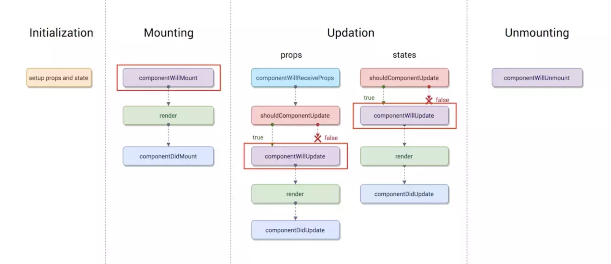
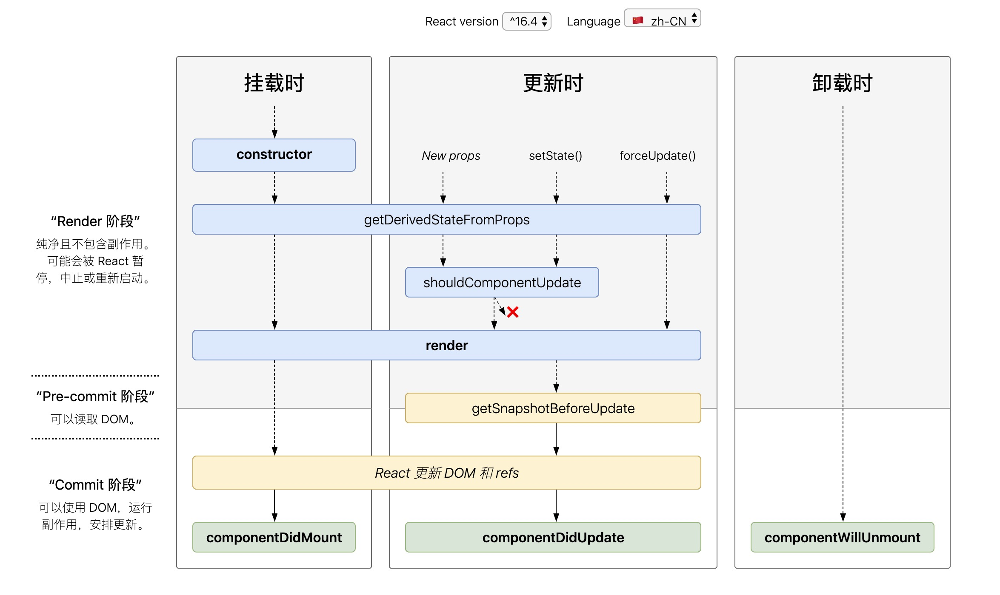
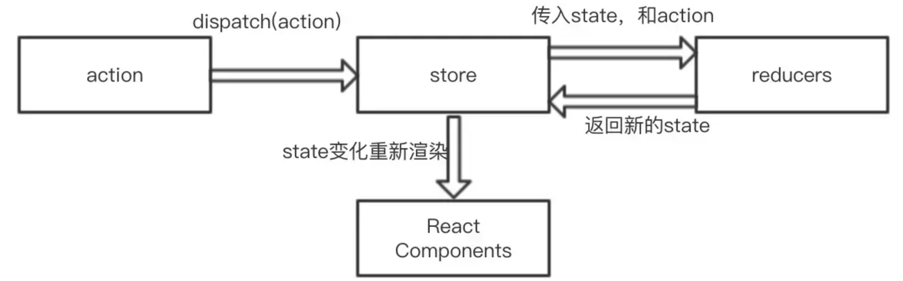

React中的state与props的区别
React的数据是自顶向下的单向流动，即父组件到子组件。然后顶部组件初始化 props ，组件相当于一个函数，函数接收 props 作为参数，state 相当于是函数的内部参数，state 只关心组件自己内部的状态，这些状态只能在组件内更改。例如：通过 setState 异步方法更新 state，会将需要更新的 state 合并后放入状态队列进行批量更新。
React生命周期
16.0 版的 React 的生命周期（life cycle）可以分为初始化、挂载、更新、卸载这几个阶段。
（1）初始化：constructor(props){ super(props); this.state = {}; } 初始 state 和 props, super(props) 用来调用基类的构造方法( constructor() ), 也将父组件的 props 注入给子组件， 而 constructor() 用来做一些组件的初始化工作，如定义 this.state 的初始内容。
（2）挂载：componentWillMount 在 render 之前执行，componentDidMount 在 render 之后执行，分别代表渲染前/后，这些都只在组件初始化时运行一次。
（3）更新：组件本身更新，父组件更新两种情况。
a. 组件自身的 state 更新了，那么会依次执行 shouldComponentUpdate(nextProps, nextState)、componentWillUpdate(nextProps, nextState)、 render 和 componentDidUpdate(prevProps, prevState)。组件本身调用 setState，无论 state 有没有变化。可通过 shouldComponentUpdate(nextProps, nextState) 返回 false 或 true 方法优化。
b. 父组件重新 render 引起子组件重新 render 的情况有两种:
情况一：直接使用，每当父组件重新 render 导致的重传 props，子组件将直接跟着重新渲染，无论 props 是否有变化。可通过 shouldComponentUpdate 方法优化，否则无论 props 是否有变化都将会导致组件跟着重新渲染。
情况二：父组件重传 props 时就会调用这个方法，在 componentWillReceiveProps(nextProps) 方法中，将 props 转换成自己的 state（根据官网描述：在该函数 componentWillReceiveProps 中调用 this.setState() 将不会引起第二次渲染）,是因为componentWillReceiveProps 中判断 props 是否变化了，若变化了，this.setState 将引起 state 变化，从而引起 render，此时就没必要再做第二次因重传 props 引起的 render 了，不然重复做一样的渲染了。
（4）卸载：在 componentWillUnmount 中执行一些清理的方法。例如清除倒计时，事件回收。

16.4 版新引入了两个新的生命周期函数: static getDerivedStateFromProps(props, state)、getSnapshotBeforeUpdate(prevProps, prevState)。生命周期可分为挂载、更新、卸载阶段。
（1）挂载：constructor、getDerivedStateFromProps、render、componentDidMount。
（2）更新：getDerivedStateFromProps、shouldComponentUpdate、render、componentDidMount、getSnapshotBeforeUpdate、componentDidUpdate。
（3）卸载：componentWillUnmount。

React组件间通信
父传子：通过 props 像组件传递需要的信息；
子传父：利用自定义事件，回调函数；
跨级组件：context（上下文）。
React的diff算法
React 分别对 tree diff、component diff 以及 element diff 进行算法优化。
（1）Web UI 中 DOM 节点跨层级的移动操作特别少，可以忽略不计。
解析：React 只会简单地考虑同层级节点的位置变换，而对于不同层级的节点，只有创建和删除操作。注意：在开发组件时，保持稳定的 DOM 结构会有助于性能的提升。例如，可以通过 CSS 隐藏或显示节点，而不是真正地移除或添加 DOM 节点。
（2）拥有相同类的两个组件将会生成相似的树形结构，拥有不同类的两个组件将会生成不同的树形结构。
a. 同一类型的组件，按照原策略继续比较 Virtual DOM 树即可。
b. 同一类型的组件，组件 A 变化为组件 B 时，有可能其 Virtual DOM 没有任何变化，如果能够确切知道这点，就可以节省大量的 diff 运算时间。因此，可以通过 shouldComponentUpdate() 来判断该组件是否需要进行 diff 算法分析。
c. 不同类型的组件，则将该组件判断为 dirty component，从而替换整个组件下的所有子节点。
（3）当节点处于同一层级时，通过唯一的 id 进行区分，diff 提供了 3 种节点操作：
a. MOVE_EXISTING（移动）：新旧集合中的节点都是相同的节点，因此无需进行节点删除和创建，只需要将旧集合中节点的位置进行移动，更新为新集合中节点的位置。
解析：对新集合中的节点进行循环遍历 for (name in nextChildren)，通过唯一的 key 判断新旧集合中是否存在相同的节点 if (prevChild === nextChild)，如果存在相同节点，则进行移动操作，但在移动前需要将当前节点在旧集合中的位置 _mountIndex与 lastIndex 进行比较 if (child._mountIndex < lastIndex)，否则不执行该操作。
b. INSERT_MARKUP（插入）：新组件类型不在旧集合，需要对新节点执行插入操作。
解析：从新集合中取得节点，然后判断旧集合中是否存在相同节点，发现不存在，此时就可以创建新节点。更新 lastIndex，并将新节点的位置更新为新集合中的位置，nextIndex++ 进入下一个节点的判断。
c. REMOVE_NODE（删除）：旧组件类型，在新集合里也有，但对应的 element 不同则不能直接复用和更新，需要执行删除操作，或者旧组件不在新集合里的，也需要执行删除操作。
解析：当完成新集合中所有节点的差异化对比后，还需要对旧集合进行循环遍历，判断是否存在新集合中没有但旧集合中仍存在的节点，此时发现存在这样的节点，因此删除节点，到此 diff 操作全部完成。
React中的虚拟DOM
JavaScript 对象表示 DOM 信息和结构，当状态变更的时候，重新渲染这个 JavaScript 的对象结构。这个 JavaScript 对象称为Virtual Dom。
React中的PureComponent
继承Component，主要是设置了shouldComponentUpdate生命周期。（nextProps, nextState）中的对象做了浅解析。
Redux
Redux主要由三部分组成：store，reducer，action。

React-Redux中的connect
connect 连接React组件和Redux store。connect实际上是一个高阶函数，返回一个新的已与 Redux store 连接的组件类。
connect(mapStateToProps,mapDispatchToProps)(Com)
connect接收两个参数：
mapStateToProps：从Redux状态树中提取需要的部分作为props传递给当前的组件。mapDispatchToProps：将需要绑定的响应事件（action）作为props传递到组件上。
React-Redux中的Provider
Provider实现store的全局访问，将store传给每个组件。
原理：使用React的context，context可以实现跨组件之间的传递。
Effects
Effect 是一个 javascript 对象，里面包含描述副作用的信息，可以通过 yield 传达给 sagaMiddleware 执行。所有的 Effect 都必须被 yield 才会执行，所有的 yield 后面也只能跟Effect，以保证代码的易测性。
Saga 中的 put、all…
Sagas 负责协调那些复杂或异步的操作。yield关键字，后面只能适配Effect，等它返回数据了再往下执行。
1) Saga 辅助函数:
·akeEvery：允许多个 getInitList 实例同时启动，在某个特定时刻，尽管之前还有一个或多个 getInitList 尚未结束，我们还是可以启动一个新的 getInitList 任务。使用 takeEvery('*')（使用通配符 * 模式），我们就能捕获发起的所有类型的 action。调用的任务无法控制何时调用它们，将在每个匹配的动作上一次又一次地被调用，也无法控制何时停止观察。
1 | function* watchAndLog() { |
takeLatest：在任何时刻 takeLatest 只允许一个 getInitList 任务在执行。并且这个任务是最后被启动的那个。如果已经有一个任务在执行的时候启动另一个 getInitList ，那之前的这个任务会被自动取消。
1 | yield takeLatest('GET_DATA_REQUEST', getDataSaga); |
2) Effect的函数:
take(pattern): 是一个阻塞的 effect。
1 | function* watchFetchData() { |
put(action)：put函数是用来发送action，可以简单的把它理解成为redux框架中的dispatch函数。注意： put 也是阻塞 effect。
1 | yield put({ type: 'PRODUCTS_SUCCESS', products }) |
call(fn, ...args)：call可以调用其他函数的函数（可以是普通函数、也可以是Generator函数），例如发送axios请求。注意： call 也是阻塞 effect。
1 | yield call(Api.fetch, '/products') |
fork(fn, ...args)：fork 函数和 call 函数很像，都是用来调用其他函数的，但是 fork 函数是非阻塞函数。
1 | yield fork(fetchData); |
select(selector, ...args)：指示 middleware 调用提供的选择器获取Store上的state数据，例如类似Redux上的store.getState()。
1 | yield select(state => state.wrap) |
all:用来命令 middleware 并行地运行多个 Effect，并等待它们全部完成。
1 | yield all([ |
race：效果与 Promise.race 相对应，创建一个 Effect 描述信息，用来命令 middleware 在多个 Effect 间进行竞赛。
1 | const [response, cancel] = yield race([ |
当有一个这样的 action 被触发，fork 与 call 的区别：
fork 是非阻塞的，非阻塞就是遇到它，不需要等它执行完, 就可以直接往下运行。
call 是阻塞，阻塞的意思就是一定要等它执行完，才可以直接往下运行。
fork 是返回一个任务，这个任务是可以被取消的，而call就是它执行的正常返回结果！
Redux、Saga优缺点
优点：
查询与责任分离，保证了 action 的纯洁性，符合 redux设计思想。
实现以同步方式写异步操作，容易理解，逻辑清晰。
将所有的异步流程控制都移入到了 saga，UI 组件不用执行业务逻辑，只需 dispatch(action) 就行，增强组件复用性。
缺点：
redux 只是执行了这个函数，不会在乎函数主体是什么。每一个异步操作都发起一个有副作用的 action，这样异步代码会分布在每一个 action 里，形式不统一，也不易维护。
action 任务拆分更细，原有流程上相当于多了一个环节，对开发者的设计和抽象拆分能力更有要求代码复杂性也有所增加，比较复杂，学习成本高。
异步请求相关的问题较难调试排查。
 支付宝打赏
支付宝打赏
 微信打赏
微信打赏
欣赏此文，打赏一下